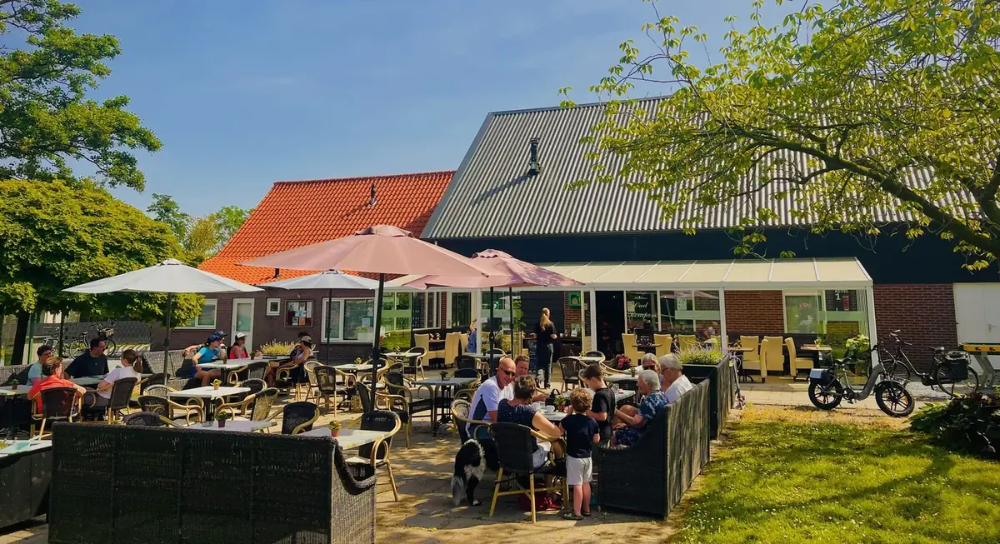
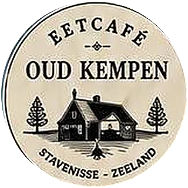

Eetcafé Oud Kempen officially opens its doors!
After all the preparations, the time has finally come — and we would love to celebrate together with you! We warmly invite our family, friends, acquaintances and of course our new village and island residents!
- 1 free low-alcoholic drink per personNon-alcoholic alternative available
- Delicious bites
- Live music
- Token system
- Hopefully nice weather
Token system
During the party we will be using tokens, which are available on site. The tokens are valid at Eetcafé Oud Kempen until 31 October 2026.
Please register
So that we can prepare well, please let us know if you will be joining us.
A gift?
Not required! Your presence is the most valuable gift to us. If you would still like to give us something, we would appreciate a monetary gift.
We will donate 10% of all monetary gifts to a good cause in Stavenisse or Tholen, and we will add another 10% ourselves.
We look forward to an unforgettable evening with you!
The grand opening has taken place
Thank you to everyone who was there. Oud-Kempen Eetcafé is open seven days a week.
Go to the website